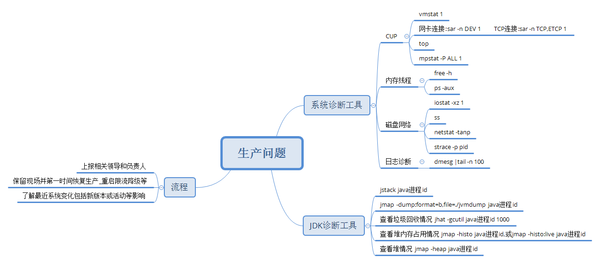

一般线上JVM问题属于比较紧急的情况,需要立即保留现场信息,并及时回复生产。
保留现场
- 打印堆栈信息 jstack java进程id
- dump堆内存 jmap -dump:format=b,file=./jvmdump java进程id
- 打印至少30秒的jvm垃圾回收情况 jstat -gcutil java进程id 1000
- 查看堆内存占用情况 jmap -histo java进程id,或jmap -histo:live java进程id |head -n 30
- 查看堆情况 jmap -heap java进程id
- 查询系统日志/var/log/messages 一般java进程突然消失,可以到这个里面查看信息
- 查看JVM参数 jinfo -flag
PID eg:jinfo -flag UseCompressedClassPointers 3212080
返回-XX:-UseCompressedClassPointers说明UseCompressedClassPointers参数为false
打印所有 XX 参数java -XX:+PrintFlagsFinal
有事在tomcat的jvm配置时候需要添加一些额外参数,这样在系统宕机之前可以保留一些关键的信息
-XX:+PrintGCDetails
-XX:+PrintGCDateStamps
-XX:+HeapDumpOnOutOfMemoryError
-XX:HeapDumpPath=/usr/temp/dump
-Xloggc:/usr/temp/dump/heap_trace.txt [确保/usr/temp目录存在]
一般问题原因
- 持续发生Full GC，但是系统不抛出OOM错误
- 堆内存溢出：java.lang.OutOfMemoryError：Java heap space
- 持久带溢出:java.lang.OutOfMemoryError： PermGen Space (jdk8已移除)
- 线程过多：java.lang.OutOfMemoryError：unable to create new native thread
- JAVA进程退出,一般JVM设置过大导致内存不够用也会导致,JVM一般设置为内存的65%
- CPU占用过高
- JIT编译导致load过高
堆内存分析使用到的工具
- MAT
- Jprofile
- Btrace

tomcat配置文件优化
连接器优化
在$CATALINA_HOME/conf/server.xml配置文件中的Connetctor节点，和连接数相关的参数配置和优化。
- maxThreads
Tomcat使用线程来处理接收的每个请求。这个值表示Tomcat可创建的最大的线程数。默认值200。 可以根据机器的时期性能和内存大小调整，一般可以在400-500。最大可以在800左右。
- acceptCount
指定当所有可以使用的处理请求的线程数都被使用时，可以放到处理队列中的请求数，超过这个数的请求将不予处理。默认值10。
- minSpareThreads
Tomcat初始化时创建的线程数。默认值4。
- maxSpareThreads
一旦创建的线程超过这个值，Tomcat就会关闭不再需要的socket线程。默认值50。
- enableLookups
是否反查域名，默认值为true。为了提高处理能力，应设置为false
- connnectionTimeout
网络连接超时，默认值20000，单位：毫秒。设置为0表示永不超时，这样设置有隐患的。通常可设置为30000毫秒。(本系统由于与后台系统接口超时时间较长，使用设置为60000)
- maxKeepAliveRequests
保持请求数量，默认值100。
- bufferSize
输入流缓冲大小，默认值2048 bytes。
- compression
压缩传输，取值on/off/force，默认值off。
其中和最大连接数相关的参数为maxThreads和acceptCount。如果要加大并发连接数，应同时加大这两个参数。web server允许的最大连接数还受制于操作系统的内核参数设置，通常Windows是2000个左右，Linux是1000个左右。
如果tomcat假死一般和maxThreads,acceptCount以及connnectionTimeout有关系,需要配置合理。
配置实例
修改配置文件：$CATALINA_HOME/conf/server.xml
AJP的连接
1
2
3
4<Connector port="8009"
maxTreads="500" minSpareThreads="10" maxSpareThreads="50"
acceptCount="50" connectionTimeout="60000"
enableLookups="false" redirectPort="8443" protocol="AJP/1.3" />通用连接
1
2
3
4
5
6
7
8<Connector port="8080"
maxTreads="500" minSpareThreads="10" maxSpareThreads="50"
acceptCount="50" connectionTimeout="60000"
enableLookups="false" redirectPort="8443" protocol="AJP/1.3"
compression="on"
compressionMinSize="2048"
noCompressionUserAgents="gozilla, traviata"
compressableMimeType="text/html,text/xml"/>主机和应用配置
1
2
3
4
5<Host name="localhost" appBase=""
unpackWARs="true" autoDeploy="true"
xmlValidation="false" xmlNamespaceAware="false">
<Context path="" docBase="/www/xxxx/site/web" reloadable="true" debug="0"/>
</Host>
基于linux的IPv4的网络优化
查看当前linux网络状态
1 | netstat -n | awk '/^tcp/ {++S[$NF]} END{for(a in S) print a, S[a]}' |
CLOSED：无活动的或正在进行的连接。
LISTEN：服务器正在等待进入呼叫。
SYN_RECV：一个连接请求已经到达，等待确认。
SYN_SENT：应用已经开始，打开一个连接。
ESTABLISHED：正常数据传输状态。
FIN_WAIT1：应用说它已经完成。
FIN_WAIT2：另一边已同意释放。
ITMED_WAIT：等待所有分组死掉。
CLOSING：两边尝试同时关闭。
TIME_WAIT：另一边已初始化一个释放,若过高会造成卡死等，关注设置超时时间。
LAST_ACK：等待所有分组死掉。
两种修改内核参数方法
- 使用echo value方式直接追加到文件里如echo “1” >/proc/sys/net/ipv4/tcp_syn_retries，但这种方法设备重启后又会恢复为默认值
- 把参数添加到/etc/sysctl.conf中，然后执行sysctl -p使参数生效，永久生效。
不同的生产环境需要优化的参数基本差不多，只是值有相应的变化。具体优化值要参考应用场景，这儿所列只是常用优化参数，是否适合，可在上面查看该参数描述，理解后，再根据自己生产环境而设。
生产中常用的参数：
1 | #在内核放弃建立连接之前发送SYN包的数量。 |
linux网络默认配置和建议优化值
/proc/sys/net目录
所有的TCP/IP参数都位于/proc/sys/net目录下（请注意，对/proc/sys/net目录下内容的修改都是临时的，任何修改在系统重启后都会丢失），例如下面这些重要的参数：
| 参数（路径**+**文件） | 描述 | 默认值 | 优化值 |
|---|---|---|---|
| /proc/sys/net/core/rmem_default | 默认的TCP数据接收窗口大小（字节）。 | 229376 | 256960 |
| /proc/sys/net/core/rmem_max | 最大的TCP数据接收窗口（字节）。 | 131071 | 513920 |
| /proc/sys/net/core/wmem_default | 默认的TCP数据发送窗口大小（字节）。 | 229376 | 256960 |
| /proc/sys/net/core/wmem_max | 最大的TCP数据发送窗口（字节）。 | 131071 | 513920 |
| /proc/sys/net/core/netdev_max_backlog | 在每个网络接口接收数据包的速率比内核处理这些包的速率快时，允许送到队列的数据包的最大数目。 | 1000 | 2000 |
| /proc/sys/net/core/somaxconn | 定义了系统中每一个端口最大的监听队列的长度，这是个全局的参数。 | 128 | 2048 |
| /proc/sys/net/core/optmem_max | 表示每个套接字所允许的最大缓冲区的大小。 | 20480 | 81920 |
| /proc/sys/net/ipv4/tcp_mem | 确定TCP栈应该如何反映内存使用，每个值的单位都是内存页（通常是4KB）。第一个值是内存使用的下限；第二个值是内存压力模式开始对缓冲区使用应用压力的上限；第三个值是内存使用的上限。在这个层次上可以将报文丢弃，从而减少对内存的使用。对于较大的BDP可以增大这些值（注意，其单位是内存页而不是字节）。 | 94011 125351 188022 | 131072 262144 524288 |
| /proc/sys/net/ipv4/tcp_rmem | 为自动调优定义socket使用的内存。第一个值是为socket接收缓冲区分配的最少字节数；第二个值是默认值（该值会被rmem_default覆盖），缓冲区在系统负载不重的情况下可以增长到这个值；第三个值是接收缓冲区空间的最大字节数（该值会被rmem_max覆盖）。 | 4096 87380 4011232 | 8760 256960 4088000 |
| /proc/sys/net/ipv4/tcp_wmem | 为自动调优定义socket使用的内存。第一个值是为socket发送缓冲区分配的最少字节数；第二个值是默认值（该值会被wmem_default覆盖），缓冲区在系统负载不重的情况下可以增长到这个值；第三个值是发送缓冲区空间的最大字节数（该值会被wmem_max覆盖）。 | 4096 16384 4011232 | 8760 256960 4088000 |
| /proc/sys/net/ipv4/tcp_keepalive_time | TCP发送keepalive探测消息的间隔时间（秒），用于确认TCP连接是否有效。 | 7200 | 1800 |
| /proc/sys/net/ipv4/tcp_keepalive_intvl | 探测消息未获得响应时，重发该消息的间隔时间（秒）。 | 75 | 30 |
| /proc/sys/net/ipv4/tcp_keepalive_probes | 在认定TCP连接失效之前，最多发送多少个keepalive探测消息。 | 9 | 3 |
| /proc/sys/net/ipv4/tcp_sack | 启用有选择的应答（1表示启用），通过有选择地应答乱序接收到的报文来提高性能，让发送者只发送丢失的报文段，（对于广域网通信来说）这个选项应该启用，但是会增加对CPU的占用。 | 1 | 1 |
| /proc/sys/net/ipv4/tcp_fack | 启用转发应答，可以进行有选择应答（SACK）从而减少拥塞情况的发生，这个选项也应该启用。 | 1 | 1 |
| /proc/sys/net/ipv4/tcp_timestamps | TCP时间戳（会在TCP包头增加12个字节），以一种比重发超时更精确的方法（参考RFC 1323）来启用对RTT 的计算，为实现更好的性能应该启用这个选项。 | 1 | 1 |
| /proc/sys/net/ipv4/tcp_window_scaling | 启用RFC 1323定义的window scaling，要支持超过64KB的TCP窗口，必须启用该值（1表示启用），TCP窗口最大至1GB，TCP连接双方都启用时才生效。 | 1 | 1 |
| /proc/sys/net/ipv4/tcp_syncookies | 表示是否打开TCP同步标签（syncookie），内核必须打开了CONFIG_SYN_COOKIES项进行编译，同步标签可以防止一个套接字在有过多试图连接到达时引起过载。 | 1 | 1 |
| /proc/sys/net/ipv4/tcp_tw_reuse | 表示是否允许将处于TIME-WAIT状态的socket（TIME-WAIT的端口）用于新的TCP连接 。 | 0 | 1 |
| /proc/sys/net/ipv4/tcp_tw_recycle | 能够更快地回收TIME-WAIT套接字。 | 0 | 1 |
| /proc/sys/net/ipv4/tcp_fin_timeout | 对于本端断开的socket连接，TCP保持在FIN-WAIT-2状态的时间（秒）。对方可能会断开连接或一直不结束连接或不可预料的进程死亡。 | 60 | 30 |
| /proc/sys/net/ipv4/ip_local_port_range | 表示TCP/UDP协议允许使用的本地端口号 | 32768 61000 | 1024 65000 |
| /proc/sys/net/ipv4/tcp_max_syn_backlog | 对于还未获得对方确认的连接请求，可保存在队列中的最大数目。如果服务器经常出现过载，可以尝试增加这个数字。 | 2048 | 2048 |
| /proc/sys/net/ipv4/tcp_low_latency | 允许TCP/IP栈适应在高吞吐量情况下低延时的情况，这个选项应该禁用。 | 0 | |
| /proc/sys/net/ipv4/tcp_westwood | 启用发送者端的拥塞控制算法，它可以维护对吞吐量的评估，并试图对带宽的整体利用情况进行优化，对于WAN 通信来说应该启用这个选项。 | 0 | |
| /proc/sys/net/ipv4/tcp_bic | 为快速长距离网络启用Binary Increase Congestion，这样可以更好地利用以GB速度进行操作的链接，对于WAN通信应该启用这个选项。 | 1 |